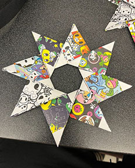
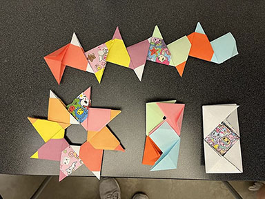
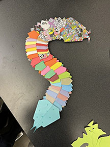
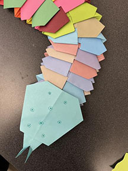
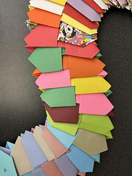
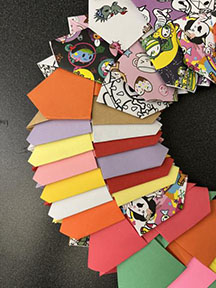
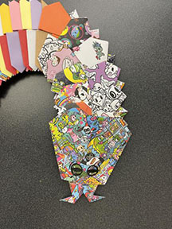
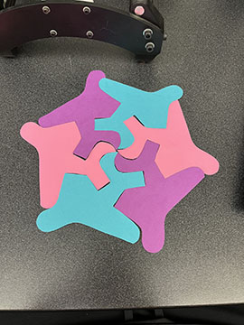
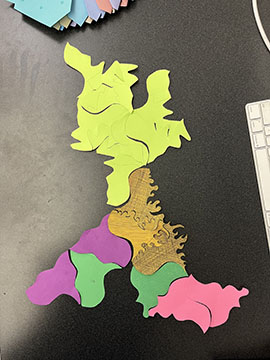

Exercise 1: Petra Star
 Exercise 2: Modular Snake System
    Exercise 3: Escher-esque Tesselation
 When making my pieces for phase 1, I made the shapes with little discretion just to see how they would fit together. In phase 2, I made my paper fastener shapes based on curiosity about what would happen when I put them together. They both functioned as chains as far as I was able to discern. For the wood fasteners, I tried to make the edges intricate. Other than that, we simply cut the pieces to observe the thickness of the cut and the effect it had on the fit between the parts. These woodcuts are where the idea for our main project began.